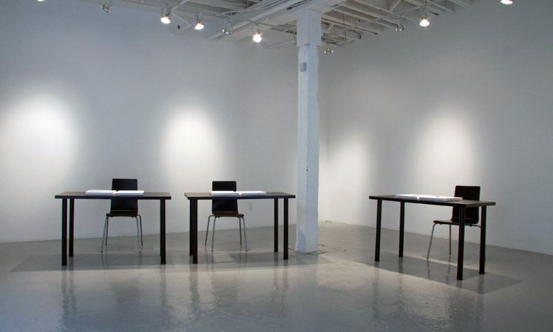
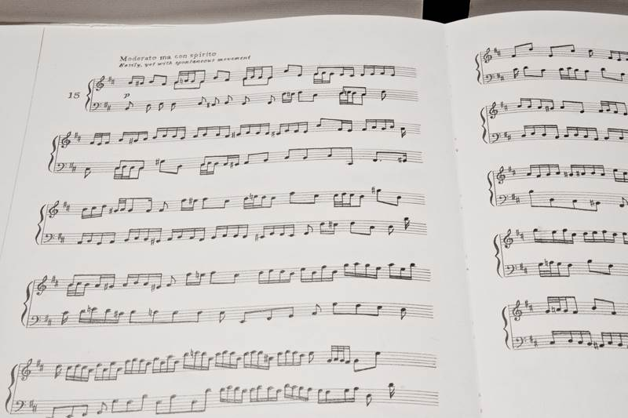
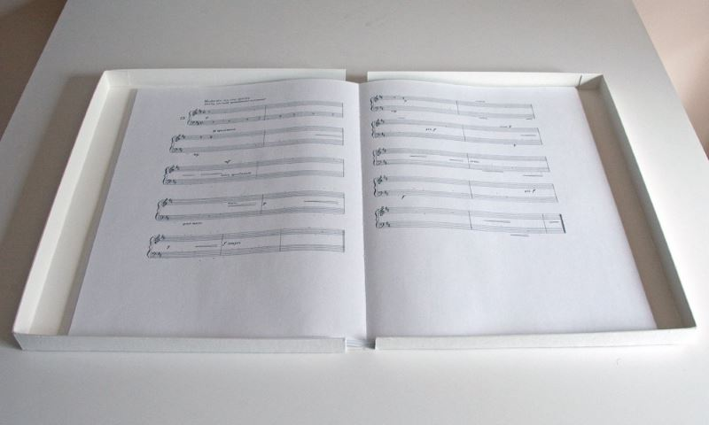

Three Variations of Two Part Inventions
2009, graphite on paper
Three Variations of Two Part Inventions is composed of three sets of fifteen drawings based on Johann Sebastian Bach's "Two Part Inventions", a pedagogical text of counterpoint compiled in 1723.
Each set of Three Variations of Two Part Inventions is produced by different rules developed from the close observation of the system of music.
In Variation I, the right hand staff notes and the left hand staff notes are reversed. As a result, each voice now has a different melody, in a broken scale, and the relationship between two voices has been altered.
In Variation II, all the rests, which are an indication of an interval of silence in musical notation, were taken away and the sounds were rearranged so the conventional time line of the music was collapsed.
In Variation III, all the notes are removed to observe the rest of the sounds and the system itself.
In Variation I, the right hand staff notes and the left hand staff notes are reversed. As a result, each voice now has a different melody, in a broken scale, and the relationship between two voices has been altered.
In Variation II, all the rests, which are an indication of an interval of silence in musical notation, were taken away and the sounds were rearranged so the conventional time line of the music was collapsed.
In Variation III, all the notes are removed to observe the rest of the sounds and the system itself.